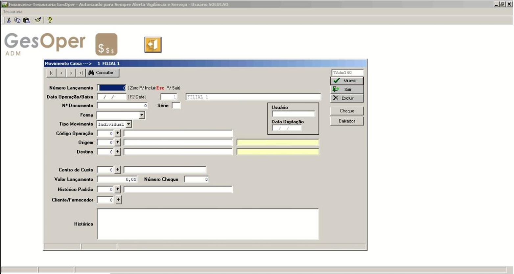

📥 Lançamento de Caixa
Pode ser acessado pelo seguinte caminho: Gesoper>>Financeiro>>Tesouraria>>Lançamento de Caixa
🔹 Processo Inicial
Antes de começar, selecione a filial onde será feito o lançamento. Deixe o campo “Número do Lançamento” como “0” e pressione TAB. Em seguida:
- Preencha a Data da Operação/Baixa (F2 para data atual);
- Os campos Usuário e Data da Digitação são preenchidos automaticamente;
- Os campos Nº Documento e Série são opcionais (ex: número de cupom ou TED);
- Escolha a Forma de pagamento adequada (usado como filtro em relatórios);
- Escolha o Tipo de Movimento: Individual ou Lote.
🔄 Origem e Destino
A conta Origem sempre representa a saída/débito, e a conta Destino representa a entrada/crédito. Exemplos:
- Pagamento: Origem = banco/caixa, Destino = despesa/passivo
- Recebimento: Origem = cliente/ativo, Destino = caixa/banco
📊 Campos adicionais
- Centro de Custo: pode ser preenchido manualmente ou herdado de lançamentos anteriores.
- Valor do Lançamento: valor a ser quitado.
- Número do Cheque: habilitado apenas se a forma for “Cheque”.
- Histórico Padrão: descrição breve do lançamento (cadastrável via Tabelas de Apoio).
- Cliente/Fornecedor e Histórico: adicionam mais detalhes.
🧾 Tipos de Operação
1. Sem título no contas a pagar/receber
- Op. 1 – Despesas à vista: Origem: Caixa/Banco | Destino: Despesas diversas
- Op. 3 – Receitas à vista: Origem: Receitas diversas | Destino: Caixa/Banco
2. Com título no contas a pagar/receber
- Op. 5 – Pagamentos: Origem: Caixa/Banco | Destino: Despesas diversas
- Op. 6 – Recebimentos: Origem: Receitas diversas | Destino: Caixa/Banco
Inclui consulta de títulos com filtros, legenda por cores (vermelho = vencido), possibilidade de pagamento parcial, juros, multa e histórico automático. O pagamento parcial gera novo lançamento para o saldo restante.
3. Movimento em Lote
Permite quitar vários títulos ao mesmo tempo, com seleção em massa. É possível abrir manutenção de baixa para cada título, se necessário. Utiliza os códigos de operação 5 ou 6.
4. Saque e Depósito
- Op. 7 – Saque: Origem: Banco | Destino: Caixa
- Op. 8 – Depósito: Origem: Caixa | Destino: Banco
5. Transferência entre contas de filiais
Op. 10 – Transferência entre contas: requer cadastro de conta empréstimos no plano de contas.
- Origem: Banco | Destino: Conta Empréstimos
- Origem: Conta Empréstimos | Destino: Banco
6. Transferência entre contas da mesma filial
- Op. 11 – Transferência interna: Origem: Banco | Destino: Banco
7. Ajuste de saldo
Op. 50 – Ajuste: registra entrada ou saída direta em uma conta, preenchendo apenas “Origem” (saída) ou “Destino” (entrada).
📄 Documento original: DPC_Projeto Documentação - Financeiro - Lançamento de Caixa | Solução Informática Ltda